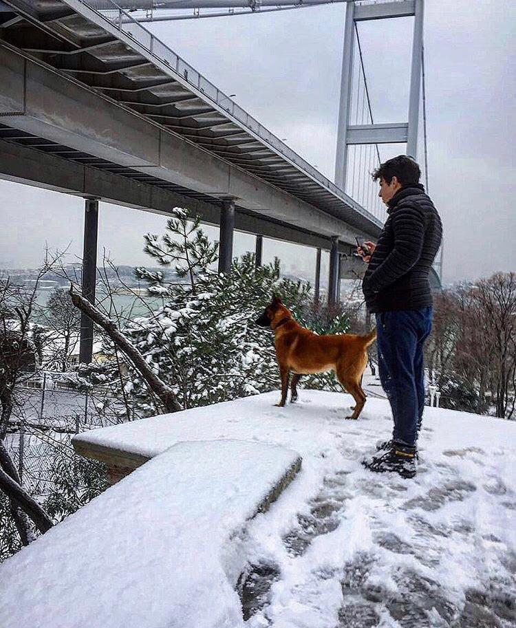

MEES ' e HOŞ GELDİNİZ
Bu sitede Muhammed Esad Sancaktutan hakkında bilgileri bulabilirsiniz.
MEES NE DEMEK

Muhammed esad sancaktutan ve Red ile Türkiyenin İstanbul İlinde Üsküdar İlçesinin Çengelköy Semtinde açılmış bir topluluktur.
MEES ' de asıl amaç insanlar sosyalleşirken aynı zamanda köpeklerin de sosyalleşmesi için uğraşılmaktadır.
Topluluğumuza Belçika Kurdu Malinois türüne çok önem verilmektedir.
MEES ' i yani topluluğumuzu kurmakta yardımcı olan en büyük etken RED ' dir.